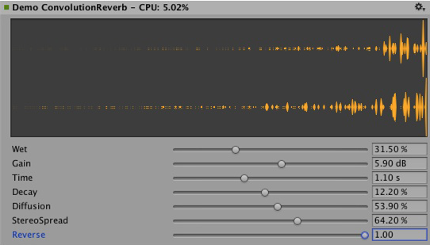
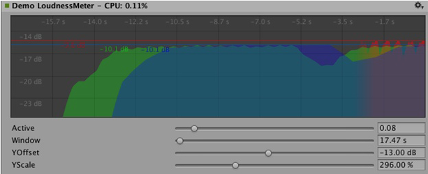
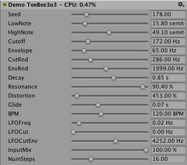
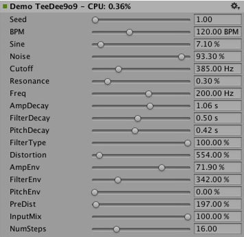

Native Audio Plugin SDK
This document describes the built-in native audio plugin interface of Unity 5.0. We will do this by looking at some specific example plugins that grow in complexity as we move along. This way, we start out with very basic concepts and introduce more complex use-cases near the end of the document.
Download
First thing you need to do is to download the newest audio plugin SDK from here.
Overview
The native audio plugin system consists of two parts:
The native DSP (Digital Signal Processing) plugin which has to be implemented as a .dll (Windows) or .dylib (OSX) in C or C++. Unlike scripts and because of the high demands on performance this has to be compiled for any platform that you want to support, possibly with platform-specific optimizations.
The GUI which is developed in C#. Note that the GUI is optional, so you always start out plugin development by creating the basic native DSP plugin, and let Unity show a default slider-based UI for the parameter descriptions that the native plugin exposes. We recommend this approach to bootstrap any project.
Note that you can initially prototype the C# GUI as a .cs file that you just drop into the Assets/Editor folder (just like any other editor script). Later on you can move this into a proper Visual Studio project as your code starts to grow and need better modularization and better IDE support. This enables you to compile it into a .dll, making it easier for the user to drop into the project and also in order to protect your code.
Also note that both the native DSP and GUI DLLs can contain multiple plugins and that the binding happens only through the names of the effects in the plugins regardless of what the DLL file is called.
What are all these files?
The native side of the plugin SDK actually only consists of one file (AudioPluginInterface.h), but to make it easy to have multiple plugin effects within the same DLL we have added supporting code to handle the effect definition and parameter registration in a simple unified way (AudioPluginUtil.h and AudioPluginUtil.cpp). Note that the NativePluginDemo project contains a number of example plugins to get you started and show a variety of different plugin types that are useful in a game context. We place this code in the public domain, so feel free to use this code as a starting point for your own creations.
Development of a plugin starts with defining which parameters your plugin should have. You don't need to have a detailed master plan of all the parameters that the plugin will have laid out before you start, but it helps to roughly have an idea of how you want the user experience to be and what components you will need.
The example plugins that we provide have a bunch of utility functions that make it easy Let's take a look at the "Ring Modulator" example plugin. This simple plugin multiplies the incoming signal by a sine wave, which gives a nice radio-noise / broken reception like effect, especially if multiple ring modulation effects with different frequencies are chained.
The basic scheme for dealing with parameters in the example plugins is to define them as enum-values that we use as indices into an array of floats for both convenience and brevity.
enum Param
{
P_FREQ,
P_MIX,
P_NUM
};
int InternalRegisterEffectDefinition(UnityAudioEffectDefinition& definition)
{
int numparams = P_NUM;
definition.paramdefs = new UnityAudioParameterDefinition [numparams];
RegisterParameter(definition, "Frequency", "Hz",
0.0f, kMaxSampleRate, 1000.0f,
1.0f, 3.0f,
P_FREQ);
RegisterParameter(definition, "Mix amount", "%",
0.0f, 1.0f, 0.5f,
100.0f, 1.0f,
P_MIX);
return numparams;
}
The numbers in the RegisterParameter calls are the minimum, maximum and default values followed by a scaling factor used for display only, i.e. in the case of a percentage-value the actual value goes from 0 to 1 and is scaled by 100 when displayed. There is no custom GUI code for this, but as mentioned earlier, Unity will generate a default GUI from these basic parameter definitions. Note that no checks are performed for undefined parameters, so the AudioPluginUtil system expects that all declared enum values (except P_NUM) are matched up with a corresponding parameter definition.
Behind the scenes the RegisterParameter function fills out an entry in the UnityAudioParameterDefinition array of the UnityAudioEffectDefinition structure that is associated with that plugin (see "AudioEffectPluginInterface.h"). The rest that needs to be set up in UnityAudioEffectDefinition is the callbacks to the functions that handle instantiating the plugin (CreateCallback), setting/getting parameters (SetFloatParameterCallback/UnityAudioEffect_GetFloatParameterCallback), doing the actual processing (UnityAudioEffect_ProcessCallback) and eventually destroying the plugin instance when done (UnityAudioEffect_ReleaseCallback).
To make it easy to have multiple plugins in the same DLL, each plugin is residing in its own namespace, and a specific naming convention for the callback functions is used such that the DEFINE_EFFECT and DECLARE_EFFECT macros can fill out the UnityAudioEffectDefinition structure. Underneath the hood all the effects definitions are stored in an array to which a pointer is returned by the only entry point of the library UnityGetAudioEffectDefinitions.
This is useful to know in case you want to develop bridge plugins that map from other plugin formats such as VST or AudioUnits to or from the Unity audio plugin interface, in which case you need to develop a more dynamic way to set up the parameter descriptions at load time.
Instantiating the plugin
The next thing is the data for the instance of the plugin. In the example plugins, we put all this into the EffectData structure. The allocation of this must happen in the corresponding CreateCallback which is called for each instance of the plugin in the mixer. In this simple example there's only one sine-wave that is multiplied to all channels, other more advanced plugins need allocate additional data per input channel.
struct EffectData
{
struct Data
{
float p[P_NUM]; // Parameters
float s; // Sine output of oscillator
float c; // Cosine output of oscillator
};
union
{
Data data;
unsigned char pad[(sizeof(Data) + 15) & ~15];
};
};
UNITY_AUDIODSP_RESULT UNITY_AUDIODSP_CALLBACK CreateCallback(
UnityAudioEffectState* state)
{
EffectData* effectdata = new EffectData;
memset(effectdata, 0, sizeof(EffectData));
effectdata->data.c = 1.0f;
state->effectdata = effectdata;
InitParametersFromDefinitions(
InternalRegisterEffectDefinition, effectdata->data.p);
return UNITY_AUDIODSP_OK;
}
The UnityAudioEffectState contains various data from the host such as the sampling rate, the total number of samples processed (for timing), or whether the plugin is bypassed, and is passed to all callback functions.
And obviously to free the plugin instance there is a corresponding function too:
UNITY_AUDIODSP_RESULT UNITY_AUDIODSP_CALLBACK ReleaseCallback(
UnityAudioEffectState* state)
{
EffectData::Data* data = &state->GetEffectData<EffectData>()->data;
delete data;
return UNITY_AUDIODSP_OK;
}
The main processing of audio happens in the ProcessCallback:
UNITY_AUDIODSP_RESULT UNITY_AUDIODSP_CALLBACK ProcessCallback(
UnityAudioEffectState* state,
float* inbuffer, float* outbuffer,
unsigned int length,
int inchannels, int outchannels)
{
EffectData::Data* data = &state->GetEffectData<EffectData>()->data;
float w = 2.0f * sinf(kPI * data->p[P_FREQ] / state->samplerate);
for(unsigned int n = 0; n < length; n++)
{
for(int i = 0; i < outchannels; i++)
{
outbuffer[n * outchannels + i] =
inbuffer[n * outchannels + i] *
(1.0f - data->p[P_MIX] + data->p[P_MIX] * data->s);
}
data->s += data->c * w; // cheap way to calculate a sine-wave
data->c -= data->s * w;
}
return UNITY_AUDIODSP_OK;
}
The GetEffectData function at the top is just a helper function casting the effectdata field of the state variable to the EffectData::Data in the structure we declared above.
Other simple plugins included are the NoiseBox plugin, which adds and multiplies the input signal by white noise at variable frequencies, or the Lofinator plugin, which does simple downsampling and quantization of the signal. All of these may be used in combination and with game-driven animated parameters to simulate anything from mobile phones to bad radio reception on walkies, broken loudspeakers etc.
The StereoWidener, which decomposes a stereo input signal into mono and side components with variable delay and then recombines these to increase the perceived stereo effect.

Which plugin to load on which platform?
Native audio plugins use the same scheme as other native or managed plugins in that they must be associated with their respective platforms via the plugin importer inspector. You can read more about the subfolders in which to place plugins here. The platform association is necessary so that the system knows which plugins to include on a each build target in the standalone builds, and with the introduction of 64-bit support this even has to be specified within a platform. OSX plugins are special in this regard since the Universal Binary format allows them to contain both 32 and 64 bit variants in the same bundle.
Native plugins in Unity that are called from managed code get loaded via the [DllImport] attribute referencing the function to be imported from the native DLL. However, in the case of native audio plugins things are different. The special problem that arises here is that the audio plugins need to be loaded before Unity starts creating any mixer assets that may need effects from the plugins. In the editor this is no problem, because we can just reload and rebuild the mixers that depend on plugins, but in standalone builds the plugins must be loaded before we create the mixer assets. To solve this, the current convention is to prefix the DLL of the plugin "audioplugin" (case insensitive) so that the system can detect this and add it to a list of plugins that will automatically be loaded at start. Remember that it's only the definitions inside the plugin that define the names of the effects that show up inside Unity's mixer, so the DLL can be called anything, but it needs to start with the string "audioplugin" to be detected as such.
For platforms such as IOS the plugin code needs to be statically linked into the Unity binary produced by the generated XCode project and there - just like plugin rendering devices - the plugin registration has to be added explicitly to the startup code of the app.

On OSX one bundle can contain both the 32- and 64 bit version of the plugin. You can also split them to save size.
Plugins with custom GUIs
Now let's look at something a little more advanced: Effects for equalization and multiband compression. Such plugins have a much higher number of parameters than the simple plugins presented in the previous section and also there is some physical coupling between parameters that require a better way to visualize the parameters than just a bunch of simple sliders. Consider an equalizer for instance: Each band has 3 different filters that collectively contribute to the final equalization curve and each of these filters has the 3 parameters frequency, Q-factor and gain which are physically linked and define the shape of each filter. So it helps the user a lot, if an equalizer plugin has a nice big display showing the resulting curve, the individual filter contributions and can be operated in such a way that multiple parameters can be set simultaneously by simple dragging operations on the control instead of changing sliders one at a time.

Custom GUI of the Equalizer plugin. Drag the three bands to change the gains and frequencies of the filter curve. Hold shift down while dragging to change the shape of each band.
So once again, the definition, initialization, deinitialization and parameter handling follows the exact same enum-based method that the simple plugins use, and even the ProcessCallback code is rather short. Well, time to stop looking at the native code and open the AudioPluginDemoGUI.sln project in Visual Studio. Here you will find the associated C# classes for the GUI code. The way it works is simple: Once Unity has loaded the native plugin DLLs and registered the contained audio plugins, it will start looking for corresponding GUIs that match the names of the registered plugins. This happens through the Name property of the EqualizerCustomGUI class which, like all custom plugin GUIs, must inherit from IAudioEffectPluginGUI. There's only one important function inside this class which is the bool OnGUI(IAudioEffectPlugin plugin) function. Via the IAudioEffectPlugin plugin argument this function gets a handle to the native plugin that it can use to read and write the parameters that the native plugin has defined. So to read a parameter it calls:
plugin.GetFloatParameter("MasterGain", out masterGain);
which returns true if the parameter was found, and to set it, it calls:
plugin.SetFloatParameter("MasterGain", masterGain);
which also returns true if the parameter exists. And that's basically the most important binding between GUI and native code. You can also use the function
plugin.GetFloatParameterInfo("NAME", out minVal, out maxVal, out defVal);
to query parameter "NAME" for it's minimum, maximum and default values to avoid duplicate definitions of these in the native and UI code. Note that if your OnGUI function return true, the Inspector will show the default UI sliders below the custom GUI. This is again useful to bootstrap your GUI development as you have all the parameters available while developing your custom GUI and have an easy way to check that the right actions performed on it result in the expected parameter changes.
We won't discuss the details about the DSP processing that is going on in the Equalizer and Multiband plugins here, for those interested, the filters are taken from Robert Bristow Johnson's excellent Audio EQ Cookbook and to plot the curves Unity provides some internal API functions to draw antialiased curves for the frequency response.
One more thing to mention though is that both the Equalizer and Multiband plugins do also provide code to overlay the input and output spectra to visualize the effect of the plugins, which brings up an interesting point: The GUI code runs at much lower update rate (the frame rate) than the audio processing and doesn't have access to the audio streams, so how do we read this data? For this, there is a special function for this in the native code:
UNITY_AUDIODSP_RESULT UNITY_AUDIODSP_CALLBACK GetFloatParameterCallback(
UnityAudioEffectState* state,
int index,
float* value,
char *valuestr)
{
EffectData::Data* data = &state->GetEffectData<EffectData>()->data;
if(index >= P_NUM)
return UNITY_AUDIODSP_ERR_UNSUPPORTED;
if(value != NULL)
*value = data->p[index];
if(valuestr != NULL)
valuestr[0] = 0;
return UNITY_AUDIODSP_OK;
}
It simply enables reading an array of floating-point data from the native plugin. Whatever that data is, the plugin system doesn't care about, as long as the request doesn't massively slow down the UI or the native code. For the Equalizer and Multiband code there is a utility class called FFTAnalyzer which makes it easy to feed in input and output data from the plugin and get a spectrum back. This spectrum data is then resampled by GetFloatBufferCallback and handed to the C# UI code. The reason that the data needs to be resampled is that the FFTAnalyzer runs the analysis at a fixed frequency resolution while GetFloatBufferCallback just returns the number of samples requested, which is determined by the width of the view that is displaying the data. For a very simple plugin that has a minimal amount of DSP code you might also take a look at the CorrelationMeter plugin, which simply plots the amplitude of the left channel against the amplitude of the right channel in order to show "how stereo" the signal is.


Left: Custom GUI of the CorrelationMeter plugin.
Right: Equalizer GUI with overlaid spectrum analysis (green curve is source, red is processed).
At this point we would also like to point out that both the Equalizer and Multiband effects are kept intentionally simple and unoptimized, but we think they serve as good examples of more complex UIs that are supported by the plugin system. There's obviously a lot of work still in doing the relevant platform-specific optimizations, tons of parameter tweaking to make it fell really right and respond in the most musical way etc. etc… We might also implement some of these effects as built-in plugins in Unity at some point simply for the convenience of increasing Unity's standard repertoire of plugins, but we sincerely hope that the reader will also take up the challenge to make some really awesome plugins -- and who knows, they might at some point end up as built-in plugins. ;-)

Convolution reverb example plugin. The impulse response is decaying random noise, defined by the parameters. This is only for demonstration purposes, as a production plugin should allow the user to load arbitrary recorded impulses, the underlying convolution algorithm remains the same nevertheless.

Example of a loudness monitoring tool measuring levels at 3 different time scales. Also just for demonstration purposes, but a good place to start building a monitor tool that conforms to modern loudness standardizations. The curve rendering code is built into Unity.
Synchronizing to the DSP clock
Time for some fun exercises. Why not use the plugin system to generate sound instead of just processing it? Let's try to do some simple bassline and drum synthesizers that should be familiar to people who listen to acid trance -- some simple clones of some of the main synths that defined this genre. Take a look at Plugin_TeeBee.cpp and Plugin_TeeDee.cpp. These simple synths just generate patterns with random notes and have some parameters for tweaking the filters, envelopes and so forth in the synthesis engine. Again, we won't discuss those details here, but just point out that the state->dsptick parameter is read in the ProcessCallback in order to determine the position in the "song". This counter is a global sample position, so we just divide it by the length of each note specified in samples and fire a note event to the synthesis engine whenever this division has a zero remainder. This way, all plugin effects stay in sync to the same sample-based clock, and if you would for instance play a prerecorded piece of music with a known tempo through such an effect, you could use the timing info to apply tempo-synchronized filter effects or delays on the music.


Spatialization
The native audio plugin SDK is the foundation of the Spatialization SDK which allows developing custom spatialization effects that are instantiazed per audio source. More information about this can be found here.
Outlook
This is just the start of an effort to open up parts of the sound system to high performance native code. We have plans to integrate this in other parts of Unity as well to make the effects usable outside of the mixer as well as extending the SDK to support other parameter types than floats with support for better default GUIs as well as storage of binary data.
Have a lot of fun creating your own plugins. Hope to see them on the asset store. ;-)
“Disclaimer”
While there are many similarities in the design, Unity's native audio SDK is not built on top of other plugin SDKs like Steinberg VST or Apple AudioUnits. It should be mentioned that it would be easy for the interested reader to implement basic wrappers for these using this SDK that allow using such plugins to be used in Unity. It is not something the dev-team of Unity is planning to do. Proper hosting of any plugin quickly gets very complex, and dealing with all the intricacies of expected invocation orders and handling custom GUI windows that are based on native code quickly grows by leaps and bounds which makes it less useful as example code.
While we do understand that it could potentially be quite useful to load your VST or AU plugin or even effects for just mocking up / testing sound design, bear in mind that using VST/AU also limits you to a few specific platforms. The potential of writing audio plugins based on the Unity SDK is that it extends to all platforms that support software-mixing and dynamically loaded native code. That said, there are valid use cases for mocking up early sound design with your favourite tools before deciding to devote time to develop custom plugins (or simply to be able to use metering plugins in the editor that don’t alter the sound in any way), so if anyone wants to make a nice solution for that, please do.